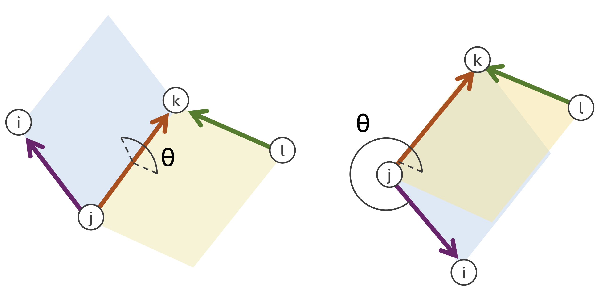
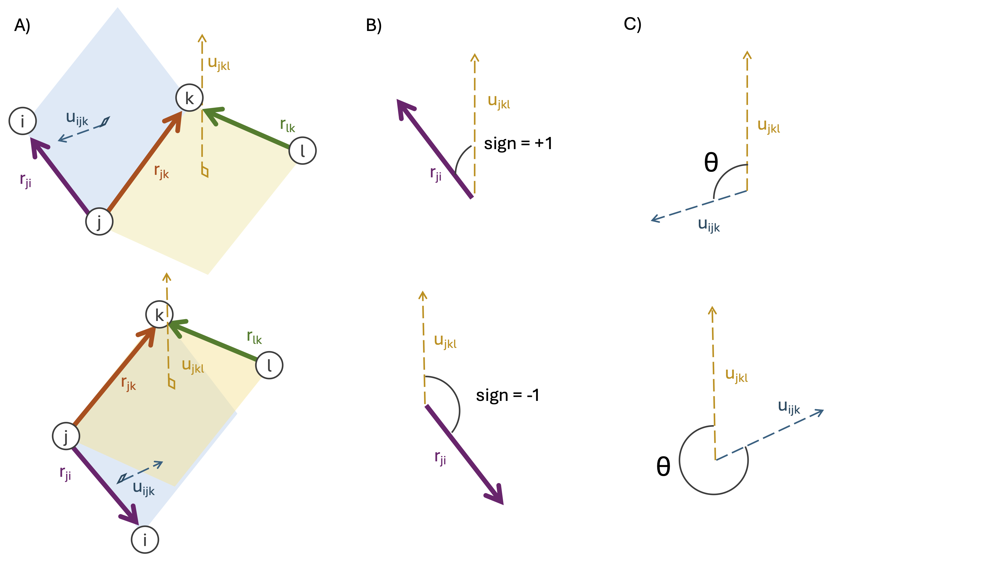
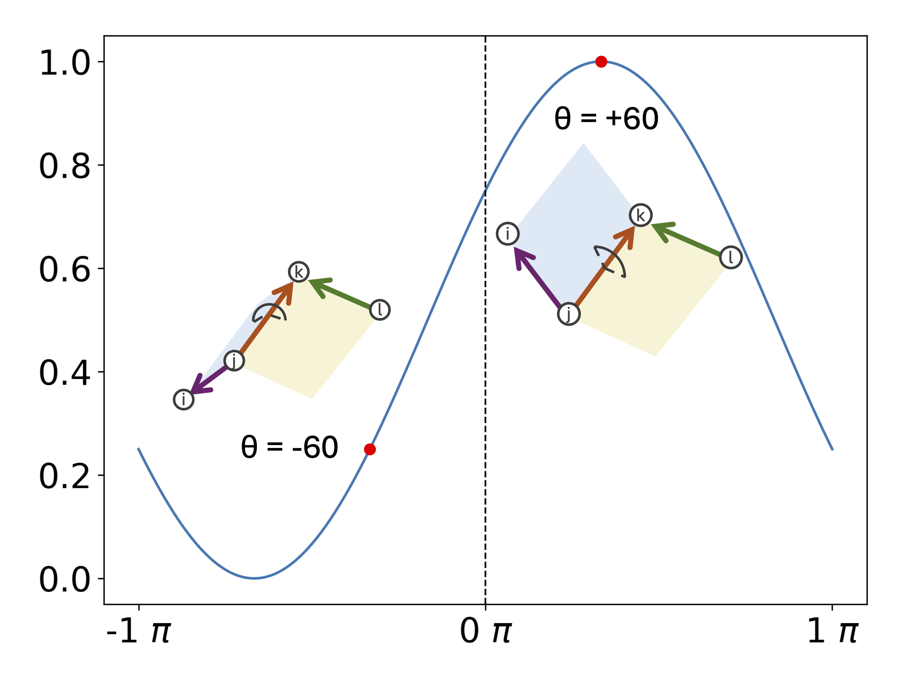
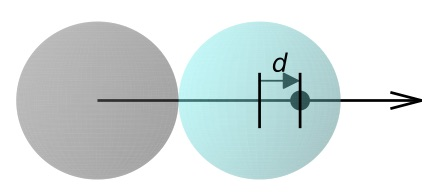
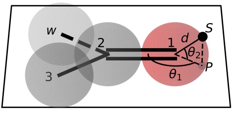
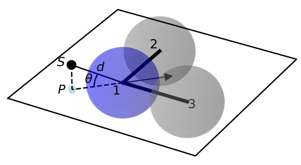
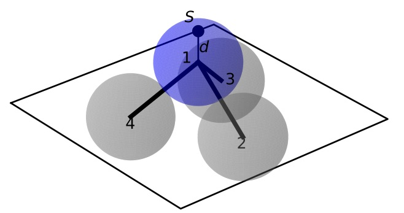

The SMIRks Native Open Force Field (SMIRNOFF) specification
SMIRNOFF is a specification for encoding molecular mechanics force fields from the Open Force Field Initiative (OpenFF) based on direct chemical perception using the broadly-supported SMARTS language, utilizing atom tagging extensions from SMIRKS.
Authors and acknowledgments
The SMIRNOFF specification was designed by the Open Force Field Initiative.
Primary contributors include:
- Caitlin C. Bannan (University of California, Irvine)
<bannanc@uci.edu> - Christopher I. Bayly (OpenEye Software)
<bayly@eyesopen.com> - John D. Chodera (Memorial Sloan Kettering Cancer Center)
<john.chodera@choderalab.org> - David L. Mobley (University of California, Irvine)
<dmobley@uci.edu>
SMIRNOFF and its reference implementation in the OpenFF Toolkit was heavily inspired by the ForceField class from the OpenMM molecular simulation package, and its associated XML format, developed by Peter K. Eastman (Stanford University).
Representations and encodings
A force field in the SMIRNOFF format can be encoded in multiple representations. Currently, only an XML representation is supported by the reference implementation of the OpenFF Toolkit.
XML representation
A SMIRNOFF force field can be described in an XML representation, which provides a human- and machine-readable form for encoding the parameter set and its typing rules. This document focuses on describing the XML representation of the force field.
- By convention, XML-encoded SMIRNOFF force fields use an
.offxmlextension if written to a file to prevent confusion with other file formats. - In XML, numeric quantities appear as strings, like
"1"or"2.3". - Integers should always be written without a decimal point, such as
"1","9". - Non-integral numbers, such as parameter values, should be written with a decimal point, such as
"1.23","2.". - In XML, certain special characters that occur in valid SMARTS/SMIRKS patterns (such as ampersand symbols
&) must be specially encoded.
See this list of XML and HTML character entity references for more details.
Future representations: JSON, MessagePack, YAML, and TOML
We are considering supporting JSON, MessagePack, YAML, and TOML representations as well.
Reference implementation
A reference implementation of the SMIRNOFF XML specification is provided in the OpenFF Toolkit.
Support for molecular simulation packages
The reference implementation currently generates parameterized molecular mechanics systems for the GPU-accelerated OpenMM molecular simulation toolkit. Parameterized systems can subsequently be converted for use in other popular molecular dynamics simulation packages (including AMBER, CHARMM, NAMD, Desmond, and LAMMPS via ParmEd and InterMol. See the example on using SMIRNOFF in AMBER or GROMACS for more details.
Basic structure
A reference implementation of a SMIRNOFF force field parser that can process XML representations (denoted by .offxml file extensions) can be found in the OpenFF Toolkit ForceField class.
Below, we describe the main structure of such an XML representation.
The enclosing <SMIRNOFF> tag
A SMIRNOFF force field XML specification always is enclosed in a <SMIRNOFF> tag, with certain required attributes provided. The required and permitted attributes defined in the <SMIRNOFF> are recorded in the version attribute, which describes the top-level attributes that are expected or permitted to be defined.
<SMIRNOFF version="0.3" aromaticity_model="OEAroModel_MDL">
...
</SMIRNOFF>
Versioning
The SMIRNOFF force field format supports versioning via the version attribute to the root <SMIRNOFF> tag, e.g.:
<SMIRNOFF version="0.3" aromaticity_model="OEAroModel_MDL">
...
</SMIRNOFF>
The version format is x.y, where x denotes the major version and y denotes the minor version.
SMIRNOFF versions are guaranteed to be backward-compatible within the same major version number series, but it is possible major version increments will break backwards-compatibility.
| SMIRNOFF tag version | Required attributes | Optional attributes |
|---|---|---|
| 0.1 | aromaticity_model |
Date, Author |
| 0.2 | aromaticity_model |
Date, Author |
| 0.3 | aromaticity_model |
Date, Author |
The SMIRNOFF tag versions describe the required and allowed force field-wide settings. The list of keywords is as follows:
Aromaticity model
The aromaticity_model specifies the aromaticity model used for chemical perception (here, OEAroModel_MDL).
Currently, the only supported model is OEAroModel_MDL, which is implemented in both the RDKit and the OpenEye Toolkit.
Todo
Add link to complete open specification of OEAroModel_MDL aromaticity model.
Metadata
Typically, date and author information is included:
<Date>2016-05-25</Date>
<Author>J. D. Chodera (MSKCC) charge increment tests</Author>
The <Date> tag should conform to ISO 8601 date formatting guidelines, such as 2018-07-14 or 2018-07-14T08:50:48+00:00 (UTC time).
Todo
Should we have a separate <Metadata> or <Provenance> section that users can add whatever they want to? This would minimize the potential for accidentally colliding with other tags we add in the future.
Physical constants
All published SMIRNOFF specification versions are intended for use with CODATA 2018 physical constants.
Parameter generators
Within the <SMIRNOFF> tag, top-level tags encode parameters for a force field based on a SMARTS/SMIRKS-based specification describing the chemical environment the parameters are to be applied to.
The file has tags corresponding to OpenMM force terms (Bonds, Angles, ProperTorsions, etc., as discussed in more detail below); these specify functional form and other information for individual force terms.
<Angles version="0.3" potential="harmonic">
...
</Angles>
which introduces the following Angle child elements which will use a harmonic potential.
Specifying parameters
Under each of these force terms, there are tags for individual parameter lines such as these:
<Angles version="0.3" potential="harmonic">
<Angle smirks="[a,A:1]-[#6X4:2]-[a,A:3]" angle="109.50*degree" k="100.0*kilocalorie_per_mole/radian**2"/>
<Angle smirks="[#1:1]-[#6X4:2]-[#1:3]" angle="109.50*degree" k="70.0*kilocalorie_per_mole/radian**2"/>
</Angles>
The first of these specifies the smirks attribute as [a,A:1]-[#6X4:2]-[a,A:3], specifying a SMIRKS pattern that matches three connected atoms specifying an angle.
This particular SMIRKS pattern matches a tetravalent carbon at the center with single bonds to two atoms of any type.
This pattern is essentially a SMARTS string with numerical atom tags commonly used in SMIRKS to identify atoms in chemically unique environments---these can be thought of as tagged regular expressions for identifying chemical environments, and atoms within those environments.
Here, [a,A] denotes any atom---either aromatic (a) or aliphatic (A), while [#6X4] denotes a carbon by element number (#6) that with four substituents (X4).
The symbol - joining these groups denotes a single bond.
The strings :1, :2, and :2 label these atoms as indices 1, 2, and 3, with 2 being the central atom.
Equilibrium angles are provided as the angle attribute, along with force constants as the k attribute (with corresponding units included in the expression).
Note
The reference implementation of the SMIRNOFF specification implemented in the OpenFF Toolkit will, by default, raise an exception if an unexpected attribute is encountered. The toolkit can be configured to accept non-spec keywords, but these are considered "cosmetic" and will not be evaluated.
For example, providing an <Angle> tag that also specifies a second force constant k2 will result in an exception, unless the user specifies that "cosmetic" attributes should be accepted by the parser.
SMIRNOFF parameter specification is hierarchical
Parameters that appear later in a SMIRNOFF specification override those which come earlier if they match the same pattern. This can be seen in the example above, where the first line provides a generic angle parameter for any tetravalent carbon (single bond) angle, and the second line overrides this for the specific case of a hydrogen-(tetravalent carbon)-hydrogen angle. This hierarchical structure means that a typical parameter file will tend to have generic parameters early in the section for each force type, with more specialized parameters assigned later.
Multiple SMIRNOFF representations can be processed in sequence
Multiple SMIRNOFF data sources (e.g. multiple OFFXML files) can be loaded in sequence.
If these files each contain unique top-level tags (such as <Bonds>, <Angles>, etc.), the resulting force field will be independent of the order in which the files are loaded.
If, however, the same tag occurs in multiple files, the contents of the tags are merged, with the tags read later taking precedence over the parameters read earlier, provided the top-level tags have compatible attributes.
The resulting force field will therefore depend on the order in which parameters are read.
This behavior is intended for limited use in appending very specific parameters, such as parameters specifying solvent models, to override standard parameters.
Units
To minimize the potential for unit conversion errors, SMIRNOFF force fields explicitly specify units in a form readable to both humans and computers for all unit-bearing quantities.
Allowed values for units are given in openmm.unit (though in the future this may change to the more widely-used Python pint library).
For example, for the angle (equilibrium angle) and k (force constant) parameters in the <Angle> example block above, both attributes are specified as a mathematical expression
<Angle smirks="[#1:1]-[#6X4:2]-[#1:3]" angle="109.50*degree" k="70.0*kilocalorie_per_mole/radian**2"/>
For more information, see the standard OpenMM unit system.
SMIRNOFF independently applies parameters to each class of potential energy terms
The SMIRNOFF uses direct chemical perception to assign parameters for potential energy terms independently for each term. Rather than first applying atom typing rules and then looking up combinations of the resulting atom types for each force term, the rules for directly applying parameters to atoms is compartmentalized in separate sections. The file consists of multiple top-level tags defining individual components of the potential energy (in addition to charge models or modifiers), with each section specifying the typing rules used to assign parameters for that potential term:
<Bonds version="0.3" potential="harmonic">
<Bond smirks="[#6X4:1]-[#6X4:2]" length="1.526*angstrom" k="620.0*kilocalories_per_mole/angstrom**2"/>
<Bond smirks="[#6X4:1]-[#1:2]" length="1.090*angstrom" k="680.0*kilocalories_per_mole/angstrom**2"/>
...
</Bonds>
<Angles version="0.3" potential="harmonic">
<Angle smirks="[a,A:1]-[#6X4:2]-[a,A:3]" angle="109.50*degree" k="100.0*kilocalories_per_mole/radian**2"/>
<Angle smirks="[#1:1]-[#6X4:2]-[#1:3]" angle="109.50*degree" k="70.0*kilocalories_per_mole/radian**2"/>
...
</Angles>
Each top-level tag specifying a class of potential energy terms has an attribute potential for specifying the functional form for the interaction.
Common defaults are defined, but the goal is to eventually allow these to be overridden by alternative choices or even algebraic expressions in the future, once more molecular simulation packages support general expressions.
We distinguish between functional forms available in all common molecular simulation packages (specified by keywords) and support for general functional forms available in a few packages (especially OpenMM, which supports a flexible set of custom forces defined by algebraic expressions) with an EXPERIMENTAL label.
Many of the specific forces are implemented as discussed in the OpenMM Documentation; see especially Section 19 on Standard Forces for mathematical descriptions of these functional forms. Some top-level tags provide attributes that modify the functional form used to be consistent with packages such as AMBER or CHARMM.
Partial charge and electrostatics models
SMIRNOFF supports several approaches to specifying electrostatic models. Currently, only classical fixed point charge models are supported, but future extensions to the specification will support point multipoles, point polarizable dipoles, Drude oscillators, charge equilibration methods, and so on.
<LibraryCharges>: Library charges for polymeric residues and special solvent models
A mechanism is provided for specifying library charges that can be applied to molecules or residues that match provided templates. Library charges are applied first, and atoms for which library charges are applied will be excluded from alternative charging schemes listed below.
For example, to assign partial charges for a non-terminal ALA residue from the AMBER ff14SB parameter set:
<LibraryCharges version="0.3">
<!-- match a non-terminal alanine residue with AMBER ff14SB partial charges -->
<LibraryCharge name="ALA" smirks="[NX3:1]([#1:2])([#6])[#6H1:3]([#1:4])([#6:5]([#1:6])([#1:7])[#1:8])[#6:9](=[#8:10])[#7]" charge1="-0.4157*elementary_charge" charge2="0.2719*elementary_charge" charge3="0.0337*elementary_charge" charge4="0.0823*elementary_charge" charge5="-0.1825*elementary_charge" charge6="0.0603*elementary_charge" charge7="0.0603*elementary_charge" charge8="0.0603*elementary_charge" charge9="0.5973*elementary_charge" charge10="-0.5679*elementary_charge"/>
...
</LibraryCharges>
In this case, a SMIRKS string defining the residue tags each atom that should receive a partial charge, with the charges specified by attributes charge1, charge2, etc.
The name attribute is optional.
Note that, for a given template, chemically equivalent atoms should be assigned the same charge to avoid undefined behavior.
If the template matches multiple non-overlapping sets of atoms, all such matches will be assigned the provided charges.
If multiple templates match the same set of atoms, the last template specified will be used.
Solvent models or excipients can also have partial charges specified via the <LibraryCharges> tag.
For example, to ensure water molecules are assigned partial charges for TIP3P water, we can specify a library charge entry:
<LibraryCharges version="0.3">
<!-- TIP3P water oxygen with charge override -->
<LibraryCharge name="TIP3P" smirks="[#1:1]-[#8X2H2+0:2]-[#1:3]" charge1="0.417*elementary_charge" charge2="-0.834*elementary_charge" charge3="0.417*elementary_charge"/>
</LibraryCharges>
| LibraryCharges section tag version | Tag attributes and default values | Required parameter attributes | Optional parameter attributes |
|---|---|---|---|
| 0.3 | smirks, charge (indexed) |
name, id, parent_id |
Note that atoms for which prespecified charges have already been applied are excluded from charging via <LibraryCharges>.
<ChargeIncrementModel>: Small molecule and fragment charges
In keeping with the AMBER force field philosophy, especially as implemented in small molecule force fields such as GAFF, GAFF2, and parm@Frosst, partial charges for small molecules are usually assigned using a quantum chemical method (usually a semiempirical method such as AM1) and a partial charge determination scheme (such as CM2 or RESP), then subsequently corrected via charge increment rules, as in the highly successful AM1-BCC approach.
Here is an example:
<ChargeIncrementModel version="0.4" number_of_conformers="1" partial_charge_method="AM1-Mulliken">
<!-- A fractional charge can be moved along a single bond -->
<ChargeIncrement smirks="[#6X4:1]-[#6X3a:2]" charge_increment1="-0.0073*elementary_charge" charge_increment2="0.0073*elementary_charge"/>
<ChargeIncrement smirks="[#6X4:1]-[#6X3a:2]-[#7]" charge_increment1="0.0943*elementary_charge" charge_increment2="-0.0943*elementary_charge"/>
<!--- Alternatively, fractional charges can be redistributed among any number of bonded atoms -->
<ChargeIncrement smirks="[N:1]([H:2])([H:3])" charge_increment1="0.02*elementary_charge" charge_increment2="-0.01*elementary_charge" charge_increment3="-0.01*elementary_charge"/>
<!-- As of version 0.4 of the ChargeIncrementModel tag, it is possible to define one less charge_increment attribute than there are tagged atoms -->
<!-- The final, undefined charge_increment will be calculated as to make the sum of the charge_increments equal 0 -->
<ChargeIncrement smirks="[#6X4:1]-[#8:2]" charge_increment1="-0.0718*elementary_charge"/>
<ChargeIncrement smirks="[N]-[C:1]-[C:2]-[Cl:3]" charge_increment1="-0.123" charge_increment2="0.456" />
</ChargeIncrementModel>
The sum of formal charges for the molecule or fragment will be used to determine the total charge the molecule or fragment will possess.
<ChargeIncrementModel> provides several optional attributes to control its behavior:
- The
number_of_conformersattribute (default:"1") is used to specify how many conformers will be generated for the molecule (or capped fragment) prior to charging. - The
partial_charge_methodattribute (default:"AM1-Mulliken") is used to specify how uncorrected partial charges are to be generated. Later additions will add restrained electrostatic potential fitting (RESP) capabilities.
The <ChargeIncrement> tags specify how the quantum chemical derived charges are to be corrected to produce the final charges.
The charge_increment# attributes specify how much the charge on the associated tagged atom index (replacing #) should be modified.
Starting in the 0.4 version of this section, a ChargeIncrement may be specified with one less charge_increment value than it has tagged atoms.
The missing charge_increment value must be that of the highest tagged atom index.
This missing charge_increment will be calculated to offset the sum of the other charge_increments in the same ChargeIncrement parameter to achieve a net value of 0.
This allows ChargeIncrement parameters to be defined similar to bond charge corrections.
Note that atoms for which prespecified, <NAGLCharges>, or <LibraryCharges> charges have already been applied are excluded from charging via <ChargeIncrementModel>.
Future additions will provide options for intelligently fragmenting large molecules and biopolymers, as well as a capping attribute to specify how fragments with dangling bonds are to be capped to allow these groups to be charged.
| ChargeIncrementModel section tag version | Tag attributes and default values | Required parameter attributes | Optional parameter attributes |
|---|---|---|---|
| 0.3 | number_of_conformers="1", partial_charge_method='AM1-Mulliken' |
smirks, charge_increment (indexed, must be equal to number of tagged atoms in smirks) |
name, id, parent_id |
| 0.4 | number_of_conformers="1", partial_charge_method='AM1-Mulliken' |
smirks, charge_increment (indexed, must be equal to- or one less than- number of tagged atoms in smirks) |
name, id, parent_id |
<ToolkitAM1BCC>: Temporary support for toolkit-based AM1-BCC partial charges
Warning
This tag is not permanent and may be phased out in future versions of the spec.
This tag calculates partial charges using the default settings of the highest-priority cheminformatics toolkit that can perform AM1-BCC charge assignment. Currently, if the OpenEye toolkit is licensed and available, this will use QuacPac configured to generate charges using AM1-BCC ELF10 for each unique molecule in the topology. Otherwise RDKit will be used for initial conformer generation and the AmberTools antechamber/sqm software will be used for charge calculation.
If this tag is specified for a force field, conformer generation will be performed regardless of whether conformations of the input molecule were provided. If RDKit/AmberTools are used as the toolkit backend for this calculation, only the first conformer is used for AM1-BCC calculation.
The charges generated by this tag may differ depending on which toolkits are available.
Note that atoms for which prespecified, <NAGLCharges>, <LibraryCharges>, or <ChargeIncrementModel> charges have already been applied are excluded from charging via <ToolkitAM1BCC>.
<NAGLCharges>: Use a specified NAGL model file for charge assignment
The NAGLCharges section-level element specifies that the force field should use a specific model file in conjunction with the openff-nagl software to assign partial charges. It contains the following attributes:
versionmodel_filemodel_file_hash(optional)digital_object_identifier(optional)
The attribute model_file is a string identifying a file that includes model weights and other information. This by convention is a PyTorch .pt file, extended to contain additional information about the model that is read by the openff-nagl software. By their nature, GNNs use many more weights than can reasonably be encoded into an XML file, so pointing to an external file is a necessary and unavoidable layer of complexity.
Because the NAGLCharges section requires loading information from a source outside the SMIRNOFF force field, two optional attributes are provided for ease and reproducibility of use.
- The optional attribute model_file_hash is a string that contains a SHA-256 file checksum, which will be checked against the loaded file. If no model_file_hash is provided, then no hash comparison will be performed.
- The optional attribute digital_object_identifier is a string that contains a Zenodo Digital Object Identifier that can be accessed to fetch the model file. If the file can not be found locally, it may be fetched from this Zenodo entry. The Zenodo entry must have an attached file with a name matching the model_file string to be fetched. This field is not used for validating the model file contents, so if a model publisher wants to ensure that a user's local model file matches that at the DOI, they should use the model_file_hash field.
Below is an example <NAGLCharges> section:
<NAGLCharges model_file="openff-gnn-am1bcc-0.1.0-rc.3.pt" model_file_hash="144ed56e46c5b3ad80157b342c8c0f8f7340e4d382a678e30dd300c811646bd0" digital_object_identifier="10.5072/zenodo.203601" version="0.3"></NAGLCharges>
This section only specifies a model file name, not a version of the NAGL software. The NAGL software is responsible for only accepting model files which it can correctly interpret.
Note that atoms for which prespecified or <LibraryCharges> charges have already been applied are excluded from charging via <NAGLCharges>.
Prespecified charges (reference implementation only)
In our reference implementation of SMIRNOFF in the OpenFF Toolkit, we also provide a method for specifying user-defined partial charges during system creation.
This functionality is accessed by using the charge_from_molecules optional argument during system creation, such as in ForceField.create_openmm_system(topology, charge_from_molecules=molecule_list).
When this optional keyword is provided, all matching molecules will have their charges set by the entries in molecule_list.
This method is provided solely for convenience in developing and exploring alternative charging schemes; actual force field releases for distribution will use one of the other mechanisms specified above.
Parameter sections
A SMIRNOFF force field consists of one or more force field term definition sections.
For the most part, these sections independently define how a specific component of the potential energy function for a molecular system is supposed to be computed (such as bond stretch energies, or Lennard-Jones interactions), as well as how parameters are to be assigned for this particular term.
Each parameter section contains a version, which encodes the behavior of the section, as well as the required and optional attributes the top-level tag and SMIRKS-based parameters.
This decoupling of how parameters are assigned for each term provides a great deal of flexibility in composing new force fields while allowing a minimal number of parameters to be used to achieve accurate modeling of intramolecular forces.
Below, we describe the specification for each force field term definition using the XML representation of a SMIRNOFF force field.
As an example of a complete SMIRNOFF force field specification, see a recent force field in the "Parsley" line (openff-1.2.0.offxml).
Note
Not all parameter sections must be specified in a SMIRNOFF force field. A wide variety of force field terms are provided in the specification, but a particular force field only needs to define a subset of those terms.
<vdW>
van der Waals force parameters, which include repulsive forces arising from Pauli exclusion and attractive forces arising from dispersion, are specified via the <vdW> tag with sub-tags for individual Atom entries, such as:
<vdW version="0.5" potential="Lennard-Jones-12-6" combining_rules="Lorentz-Berthelot" scale12="0.0" scale13="0.0" scale14="0.5" scale15="1.0" switch_width="1.0*angstrom" cutoff="9.0*angstrom" periodic_method="cutoff" nonperiodic_method="no-cutoff">
<Atom smirks="[#1:1]" sigma="1.4870*angstrom" epsilon="0.0157*kilocalories_per_mole"/>
<Atom smirks="[#1:1]-[#6]" sigma="1.4870*angstrom" epsilon="0.0157*kilocalories_per_mole"/>
...
</vdW>
For standard Lennard-Jones 12-6 potentials (specified via potential="Lennard-Jones-12-6"), the epsilon parameter denotes the well depth, while the size property can be specified either via providing the sigma attribute, such as sigma="1.3*angstrom", or via the r_0/2 (rmin/2) values used in AMBER force fields (here denoted rmin_half as in the example above).
The two are related by r0 = 2^(1/6)*sigma and conversion is done internally into the sigma values used in OpenMM.
Different cut-off treatments can be applied to periodic and non-periodic systems using the periodic_method and nonperiodic_method attributes, respectively. Each can take the following values:
"cutoff": The vdW interaction is truncated at a distance specified by thecutoffattribute."no-cutoff": The vdW interaction is not truncated.
periodic_method can take additionally take the following values:
Ewald3D: a method like Ewald summation (often referred to in implementation as "LJPME") should be used. This is only compatible withpotential="Lennard-Jones-12-6".
By default, periodic_method="cutoff and nonperiodic_method="no-cutoff". If either attribute is set to no-cutoff, other attributes dealing with the cut-off are ignored.
Attributes in the <vdW> tag specify the scaling terms applied to the energies of 1-2 (scale12, default: 0), 1-3 (scale13, default: 0), 1-4 (scale14, default: 0.5), and 1-5 (scale15, default: 1.0) interactions,
as well as the distance at which a switching function is applied (switch_width, default: "1.0*angstrom"), and the cutoff (cutoff, default: "9.0*angstroms"). Version 0.3 assumes that the long-range dispersion handling is isotropic.
The potential attribute (default: "none") specifies the potential energy function to use.
Currently, only potential="Lennard-Jones-12-6" is supported:
U(r) = 4*epsilon*((sigma/r)^12 - (sigma/r)^6)
The combining_rules attribute (default: "none") currently only supports "Lorentz-Berthelot", which specifies the geometric mean of epsilon and arithmetic mean of sigma.
Support for other Lennard-Jones mixing schemes will be added later: Waldman-Hagler, Fender-Halsey, Kong, Tang-Toennies, Pena, Hudson-McCoubrey, Sikora.
Later revisions will add support for additional potential types (e.g., Buckingham-exp-6), as well as the ability to support arbitrary algebraic functional forms using a scheme such as
<vdW version="0.3" potential="4*epsilon*((sigma/r)^12-(sigma/r)^6)" scale12="0.0" scale13="0.0" scale14="0.5" scale15="1" switch_width="1.0*angstrom" cutoff="9.0*angstrom">
<CombiningRules>
<CombiningRule parameter="sigma" function="(sigma1+sigma2)/2"/>
<CombiningRule parameter="epsilon" function="sqrt(epsilon1*epsilon2)"/>
</CombiningRules>
<Atom smirks="[#1:1]" sigma="1.4870*angstrom" epsilon="0.0157*kilocalories_per_mole"/>
<Atom smirks="[#1:1]-[#6]" sigma="1.4870*angstrom" epsilon="0.0157*kilocalories_per_mole"/>
...
</vdW>
If the <CombiningRules> tag is provided, it overrides the combining_rules attribute.
Later revisions will also provide support for special interactions using the <AtomPair> tag:
<vdW version="0.3" potential="Lennard-Jones-12-6" combining_rules="Lorentz-Berthelot" scale12="0.0" scale13="0.0" scale14="0.5" scale15="1">
<AtomPair smirks1="[#1:1]" smirks2="[#6:2]" sigma="1.4870*angstrom" epsilon="0.0157*kilocalories_per_mole"/>
...
</vdW>
| vdW section tag version | Tag attributes and default values | Required parameter attributes | Optional parameter attributes |
|---|---|---|---|
| 0.3 | potential="Lennard-Jones-12-6, combining_rules="Lorentz-Berthelot", scale12="0", scale13="0", scale14="0.5", scale15="1.0", cutoff="9.0*angstrom", switch_width="1.0*angstrom", method="cutoff" |
smirks, epsilon, (sigma OR rmin_half) |
id, parent_id |
| 0.4 | potential="Lennard-Jones-12-6, combining_rules="Lorentz-Berthelot", scale12="0", scale13="0", scale14="0.5", scale15="1.0", cutoff="9.0*angstrom", switch_width="1.0*angstrom", periodic_method="cutoff", nonperiodic_method="no-cutoff" |
smirks, epsilon, (sigma OR rmin_half) |
id, parent_id |
| 0.5 | potential="Lennard-Jones-12-6, combining_rules="Lorentz-Berthelot", scale12="0", scale13="0", scale14="0.5", scale15="1.0", cutoff="9.0*angstrom", switch_width="1.0*angstrom", periodic_method="cutoff", nonperiodic_method="no-cutoff" |
smirks, epsilon, (sigma OR rmin_half) |
id, parent_id |
<Electrostatics>
Electrostatic interactions are specified via the <Electrostatics> tag.
<Electrostatics version="0.4" periodic_potential="Ewald3D-ConductingBoundary" nonperiodic_potential="Coulomb" exception_potential="Coulomb" scale12="0.0" scale13="0.0" scale14="0.833333" scale15="1.0"/>
Some methods for computing electrostatic interactions are not valid for periodic systems, so
separate methods must be specified for periodic (periodic_potential) and non-periodic
(nonperiodic_potential) systems.
The periodic_potential attribute specifies the manner in which electrostatic interactions are to be computed in periodic systems. Allowed values are:
Ewald3D-ConductingBoundary(default) denotes that a method like particle mesh Ewald should be used.- A function denotes that the specified function should be used, which may make use of
cutoff,switch_width, and/orsolvent_dielectricterms
The nonperiodic_potential attribute specifies the manner in which electrostatic interactions are to be computed in non-periodic systems. Allowed values are:
Coulomb(default) denotes that the standard Coulomb potential should be used with no cutoff or reaction-field attenuation- A function denotes that the specified function should be used, which may make use of
cutoff,switch_width, and/orsolvent_dielectricterms
The exception_potential attribute specifies the treatment of intramolecular electrostatics exceptions, such as scaled 1-4 interactions. Allowed values are:
Coulomb(default) denotes that the standard Coulomb potential should be used with no cutoff or reaction-field attenuation- A function denotes that the specified function should be used, which may make use of
cutoff,switch_width, and/orsolvent_dielectricterms
The interaction scaling parameters applied to atoms connected by a few bonds are
scale12(default: 0) specifies the scaling applied to 1-2 bondsscale13(default: 0) specifies the scaling applied to 1-3 bondsscale14(default: 0.833333) specifies the scaling applied to 1-4 bondsscale15(default: 1.0) specifies the scaling applied to 1-5 bonds
Currently, no child tags are used because the charge model is specified via different means (currently library charges or BCCs).
For potentials where the cutoff determines the potential energy of the system (such as custom expression or reaction field methods), the appropriate cutoff distance must also be specified, and the appropriate switch_width should be set to a numerical value if a switching function is to be used.
It is possible to define an Electrostatics section where no potential uses cutoff, switch_width, or solvent_dielectric. In these cases it is strongly recommended that these values be set to none to avoid ambiguity.
| Electrostatics section tag version | Tag attributes and default values | Required parameter attributes | Optional parameter attributes |
|---|---|---|---|
| 0.3 | scale12="0", scale13="0", scale14="0.833333", scale15="1.0", cutoff="9.0*angstrom", switch_width="0*angstrom", method="PME" |
N/A | N/A |
| 0.4 | scale12="0", scale13="0", scale14="0.833333", scale15="1.0", cutoff="none", switch_width="none", periodic_potential="Ewald3D-ConductingBoundary", nonperiodic_potential="Coulomb", exception_potential="Coulomb", solvent_dielectric="none" |
N/A | N/A |
<Bonds>
Bond parameters are specified via a <Bonds>...</Bonds> block, with individual <Bond> tags containing attributes specifying the equilibrium bond length (length) and force constant (k) values for specific bonds.
For example:
<Bonds version="0.3" potential="harmonic">
<Bond smirks="[#6X4:1]-[#6X4:2]" length="1.526*angstrom" k="620.0*kilocalories_per_mole/angstrom**2"/>
<Bond smirks="[#6X4:1]-[#1:2]" length="1.090*angstrom" k="680.0*kilocalories_per_mole/angstrom**2"/>
...
</Bonds>
Currently, only potential="harmonic" is supported, where we utilize the standard harmonic functional form:
U(r) = (k/2)*(r-length)^2
Later revisions will add support for additional potential types and the ability to support arbitrary algebraic functional forms.
If the potential attribute is omitted, it defaults to harmonic.
Note that AMBER and CHARMM define a modified functional form, such that U(r) = k*(r-length)^2, so that force constants would need to be multiplied by two in order to be used in the SMIRNOFF format.
Constrained bonds are handled by a separate <Constraints> tag, which can either specify constraint distances or draw them from equilibrium distances specified in <Bonds>.
Fractional bond orders
Fractional bond orders can be used to allow interpolation of bond parameters. For example, these parameters:
<Bonds version="0.3" potential="harmonic">
<Bond smirks="[#6X3:1]-[#6X3:2]" k="820.0*kilocalories_per_mole/angstrom**2" length="1.45*angstrom"/>
<Bond smirks="[#6X3:1]:[#6X3:2]" k="938.0*kilocalories_per_mole/angstrom**2" length="1.40*angstrom"/>
<Bond smirks="[#6X3:1]=[#6X3:2]" k="1098.0*kilocalories_per_mole/angstrom**2" length="1.35*angstrom"/>
...
can be replaced by a single parameter line by first invoking the fractional_bondorder_method attribute to specify a method for computing the fractional bond order and fractional_bondorder_interpolation for specifying the procedure for interpolating parameters between specified integral bond orders:
<Bonds version="0.3" potential="harmonic" fractional_bondorder_method="AM1-Wiberg" fractional_bondorder_interpolation="linear">
<Bond smirks="[#6X3:1]!#[#6X3:2]" k_bondorder1="820.0*kilocalories_per_mole/angstrom**2" k_bondorder2="1098*kilocalories_per_mole/angstrom**2" length_bondorder1="1.45*angstrom" length_bondorder2="1.35*angstrom"/>
...
This allows specification of force constants and lengths for bond orders 1 and 2, and then interpolation between those based on the partial bond order.
fractional_bondorder_methoddefaults toAM1-Wiberg.fractional_bondorder_interpolationdefaults tolinear, which is the only supported scheme for now.
| Bonds section tag version | Tag attributes and default values | Required parameter attributes | Optional parameter attributes |
|---|---|---|---|
| 0.3 | potential="harmonic", fractional_bondorder_method="none", fractional_bondorder_interpolation="linear" |
smirks, length, k |
id, parent_id |
| 0.4 | potential="(k/2)*(r-length)^2", fractional_bondorder_method="AM1-Wiberg", fractional_bondorder_interpolation="linear" |
smirks, length, k |
id, parent_id |
<Angles>
Angle parameters are specified via an <Angles>...</Angles> block, with individual <Angle> tags containing attributes specifying the equilibrium angle (angle) and force constant (k), as in this example:
<Angles version="0.3" potential="harmonic">
<Angle smirks="[a,A:1]-[#6X4:2]-[a,A:3]" angle="109.50*degree" k="100.0*kilocalories_per_mole/radian**2"/>
<Angle smirks="[#1:1]-[#6X4:2]-[#1:3]" angle="109.50*degree" k="70.0*kilocalories_per_mole/radian**2"/>
...
</Angles>
Currently, only potential="harmonic" is supported, where we utilize the standard harmonic functional form:
U(r) = (k/2)*(theta-angle)^2
Later revisions will add support for additional potential types and the ability to support arbitrary algebraic functional forms.
If the potential attribute is omitted, it defaults to harmonic.
Note that AMBER and CHARMM define a modified functional form, such that U(r) = k*(theta-angle)^2, so that force constants would need to be multiplied by two in order to be used in the SMIRNOFF format.
| Angles section tag version | Tag attributes and default values | Required parameter attributes | Optional parameter attributes |
|---|---|---|---|
| 0.3 | potential="harmonic" |
smirks, angle, k |
id, parent_id |
<ProperTorsions>
Proper torsions are specified via a <ProperTorsions>...</ProperTorsions> block, with individual <Proper> tags containing attributes specifying the periodicity (periodicity#), phase (phase#), and barrier height (k#).
<ProperTorsions version="0.3" potential="k*(1+cos(periodicity*theta-phase))">
<Proper smirks="[a,A:1]-[#6X4:2]-[#6X4:3]-[a,A:4]" idivf1="9" periodicity1="3" phase1="0.0*degree" k1="1.40*kilocalories_per_mole"/>
<Proper smirks="[#6X4:1]-[#6X4:2]-[#8X2:3]-[#6X4:4]" idivf1="1" periodicity1="3" phase1="0.0*degree" k1="0.383*kilocalories_per_mole" idivf2="1" periodicity2="2" phase2="180.0*degree" k2="0.1*kilocalories_per_mole"/>
...
</ProperTorsions>
Here, child Proper tags specify at least k1, phase1, and periodicity1 attributes for the corresponding parameters of the first force term applied to this torsion.
However, additional values are allowed in the form k#, phase#, and periodicity#, where all # values must be consecutive (e.g., it is impermissible to specify k1 and k3 values without a k2 value) but # can go as high as necessary.
For convenience, an optional attribute specifies a torsion multiplicity by which the barrier height (k#) should be divided (idivf#). The final barrier height is calculated as k#/idivf#. idivf can be assigned an integer value (such as "1"), or "auto". If idivf="auto", the following equation is used to determine the idivf value for a torsion applying to four atoms i-j-k-l, where n_j refers to the degree (i.e. number of bonds) of atom j:
idivf = (n_j - 1) * (n_k - 1)
The default behavior of this idivf can be controlled by the top-level attribute default_idivf (default: "auto") for <ProperTorsions>.
For example:
<ProperTorsions version="0.3" potential="k*(1+cos(periodicity*theta-phase))" default_idivf="auto">
<Proper smirks="[a,A:1]-[#6X4:2]-[#6X4:3]-[a,A:4]" periodicity1="3" phase1="0.0*degree" k1="1.40*kilocalories_per_mole"/>
...
</ProperTorsions>
Currently, only potential="k*(1+cos(periodicity*theta-phase))" is supported, where we utilize the functional form:
U = \sum_{i=1}^N k_i/idivf_i * (1 + cos(periodicity_i * theta - phase_i))
Note
AMBER defines a modified functional form, such that U = \sum_{i=1}^N (k_i/2) * (1 + cos(periodicity_i * phi - phase_i)), so that barrier heights would need to be divided by two in order to be used in the SMIRNOFF format (AMBER uses phi in an analogous way to how SMIRNOFF uses theta).
If the potential attribute is omitted, it defaults to k*(1+cos(periodicity*theta-phase)).
In the potential function, the angle theta is calculated using input vectors
defined by the four atoms of the torsion i-j-k-l.

Where the vector r_ji is defined as the vector from atom j to atom i:
r_ji = x_i - x_j
the angle theta should be calculated using the input vectors r_ji, r_jk, and r_lk. These define the planes u_ijk and u_jkl (see figure below, section A).

The sign of the angle is determined by comparing the r_ji vector to the u_jkl plane (see figure above, section B). If the r_ji vector has an acute angle to the u_jkl vector, the sign is positive; if the angle is obtuse, the sign is negative (section C in figure above).
Pseudocode of the expected implementation is provided below.
u_ijk = r_ji x r_jk
u_jkl = r_jk x r_lk
angle = acos(u_ijk • u_jkl) # returns in domain [0, pi]
rij_to_ujkl = r_ji • u_jkl
if rij_to_ujkl < 0:
sign = -1
else:
sign = 1
theta = sign * angle
Note
Angle values close to 0 and π may be susceptible to precision errors in implementations.
The sign of the theta angle is important in cases where the torsion profile is asymmetric,
i.e. where the phase is neither 0 nor pi, for example in the case below.

Note
A SMIRKS pattern that can match a particular bonded
quartet in either i-j-k-l or l-k-j-i order is
ambiguous, and the specification cannot guarantee the
match will be performed in any predetermined or
deterministic order, potentially leading to undesired and undefined results.
Fractional torsion bond orders
Fractional torsion bond orders can be used to allow interpolation and extrapolation of torsion parameters. This is similar to the functionality provided by fractional bond orders detailed above. For example, these parameters:
<ProperTorsions version="0.3" potential="k*(1+cos(periodicity*theta-phase))" default_idivf="auto">
<Proper smirks="[*:1]:[#6X4:2]-[#6X4:3]:[*:4]" periodicity1="2" phase1="0.0 * degree" k1="1.00*kilocalories_per_mole" idivf1="1.0"/>
<Proper smirks="[*:1]:[#6X4:2]=[#6X4:3]:[*:4]" periodicity1="2" phase1="0.0 * degree" k1="1.80*kilocalories_per_mole" idivf1="1.0"/>
...
can be replaced by a single parameter line by first defining the fractional_bondorder_method header-level attribute to specify a method for computing the fractional bond order and fractional_bondorder_interpolation for specifying the procedure for interpolating parameters between specified integer bond orders:
<ProperTorsions version="0.3" potential="k*(1+cos(periodicity*theta-phase))" default_idivf="auto" fractional_bondorder_method="AM1-Wiberg" fractional_bondorder_interpolation="linear">
<Proper smirks="[*:1]:[#6X4:2]~[#6X4:3]:[*:4]" periodicity1="2" phase1="0.0 * degree" k1_bondorder1="1.00*kilocalories_per_mole" k1_bondorder2="1.80*kilocalories_per_mole" idivf1="1.0"/>
...
This allows specification of the barrier height for e.g. bond orders 1 and 2 (single and double bonds), and then interpolation between those based on the partial/fractional bond order.
Note that in actual usage partial/fractional bond order may never be exactly 1 or 2, or perhaps even near 2; these values only serve to define the slope of the line used for interpolation.
In the example above, we replaced the two proper torsion terms (one single central bond (-) and one double central bond (=) with a single term giving the barrier heights for bond order 1 and 2.
If there are cases where the fractional bond order is 1.5, this can correspond to e.g. an aromatic bond.
When barrier heights for more than two integer bond orders are specified, (say, 1, 2, and 3), the interpolation lines are drawn between successive points as a piecewiese linear function.
Cases in which the fractional bond order for the central bond is outside of the bond orders specified (e.g. 1 and 2 above), the barrier height k# is extrapolated using the same slope of the line used for interpolation.
This works even when barrier heights for more than two integer bond orders are specified (say, 1, 2, and 3), in which case the piecewise linear extrapolation beyond the bounds uses the slope of the line defined by the nearest two bond orders.
In other words, a fractional bond order of 3.2 would yield an interpolated k# value determined by the interpolation line between k#_bondorder2 and k#_bondorder3.
A fractional bond order of .9 would yield an interpolated k# value determined by the interpolation line between k#_bondorder1 and k#_bondorder2.
Some key usage points:
fractional_bondorder_methoddefaults toAM1-Wiberg.fractional_bondorder_interpolationdefaults tolinear, which is the only supported scheme for now.
| ProperTorsions section tag version | Tag attributes and default values | Required parameter attributes | Optional parameter attributes |
|---|---|---|---|
| 0.3 | potential="k*(1+cos(periodicity*theta-phase))", default_idivf="auto" |
smirks, k, phase, periodicity |
idivf, id, parent_id |
| 0.4 | potential="k*(1+cos(periodicity*theta-phase))", default_idivf="auto", fractional_bondorder_method="AM1-Wiberg", fractional_bondorder_interpolation="linear" |
smirks, (k OR k_bondorder), phase, periodicity |
idivf, id, parent_id |
<ImproperTorsions>
Improper torsions are specified via an <ImproperTorsions>...</ImproperTorsions> block, with individual <Improper> tags containing attributes that specify the same properties as <ProperTorsions>:
<ImproperTorsions version="0.3" potential="k*(1+cos(periodicity*theta-phase))">
<Improper smirks="[*:1]~[#6X3:2](=[#7X2,#7X3+1:3])~[#7:4]" k1="10.5*kilocalories_per_mole" periodicity1="2" phase1="180.*degree"/>
...
</ImproperTorsions>
Currently, only potential="k*(1+cos(periodicity*theta-phase))" is supported, where we utilize the functional form of CHARMM:
U = \sum_{i=1}^N k_i * (1 + cos(periodicity_i * phi - phase_i))
Note
AMBER defines a modified functional form, such that U = \sum_{i=1}^N (k_i/2) * (1 + cos(periodicity_i * phi - phase_i)), so that barrier heights would need to be divided by two in order to be used in the SMIRNOFF format.
If the potential attribute is omitted, it defaults to "k*(1+cos(periodicity*theta-phase))".
The improper torsion energy is computed as the average over all three impropers (all with the same handedness) in a trefoil. This avoids the dependence on arbitrary atom orderings that occur in more traditional typing engines such as those used in AMBER. The second atom in an improper (in the example above, the trivalent carbon) is the central atom in the trefoil.
{kind=link}
| ImproperTorsions section tag version | Tag attributes and default values | Required parameter attributes | Optional parameter attributes |
|---|---|---|---|
| 0.3 | potential="k*(1+cos(periodicity*theta-phase))", default_idivf="auto" |
smirks, k, phase, periodicity |
idivf, id, parent_id |
<GBSA>
Warning
The current release of ParmEd can not transfer GBSA models produced by the OpenFF Toolkit to other simulation packages. These GBSA forces are currently only computable using OpenMM.
Generalized-Born surface area (GBSA) implicit solvent parameters are optionally specified via a <GBSA>...</GBSA> using <Atom> tags with GBSA model specific attributes:
<GBSA version="0.3" gb_model="OBC1" solvent_dielectric="78.5" solute_dielectric="1" sa_model="ACE" surface_area_penalty="5.4*calories/mole/angstroms**2" solvent_radius="1.4*angstroms">
<Atom smirks="[*:1]" radius="0.15*nanometer" scale="0.8"/>
<Atom smirks="[#1:1]" radius="0.12*nanometer" scale="0.85"/>
<Atom smirks="[#1:1]~[#7]" radius="0.13*nanometer" scale="0.85"/>
<Atom smirks="[#6:1]" radius="0.17*nanometer" scale="0.72"/>
<Atom smirks="[#7:1]" radius="0.155*nanometer" scale="0.79"/>
<Atom smirks="[#8:1]" radius="0.15*nanometer" scale="0.85"/>
<Atom smirks="[#9:1]" radius="0.15*nanometer" scale="0.88"/>
<Atom smirks="[#14:1]" radius="0.21*nanometer" scale="0.8"/>
<Atom smirks="[#15:1]" radius="0.185*nanometer" scale="0.86"/>
<Atom smirks="[#16:1]" radius="0.18*nanometer" scale="0.96"/>
<Atom smirks="[#17:1]" radius="0.17*nanometer" scale="0.8"/>
</GBSA>
Supported Generalized Born (GB) models
In the <GBSA> tag, gb_model selects which GB model is used.
Currently, this can be selected from a subset of the GBSA models available in OpenMM:
HCT: Hawkins-Cramer-Truhlar (corresponding toigb=1in AMBER): requires parameters[radius, scale]OBC1: Onufriev-Bashford-Case using the GB(OBC)I parameters (corresponding toigb=2in AMBER): requires parameters[radius, scale]OBC2: Onufriev-Bashford-Case using the GB(OBC)II parameters (corresponding toigb=5in AMBER): requires parameters[radius, scale]
If the gb_model attribute is omitted, it defaults to OBC1.
The attributes solvent_dielectric and solute_dielectric specify solvent and solute dielectric constants used by the GB model.
In this example, radius and scale are per-particle parameters of the OBC1 GB model supported by OpenMM.
Surface area (SA) penalty model
The sa_model attribute specifies the solvent-accessible surface area model ("SA" part of GBSA) if one should be included; if omitted, no SA term is included.
Currently, only the analytical continuum electrostatics (ACE) model designated ACE, can be specified, but there are plans to add more models in the future, such as the Gaussian solvation energy component of EEF1.
If sa_model is not specified, it defaults to ACE.
The ACE model permits two additional parameters to be specified:
- The
surface_area_penaltyattribute specifies the surface area penalty for theACEmodel. (Default:5.4 calories/mole/angstroms**2) - The
solvent_radiusattribute specifies the solvent radius. (Default:1.4 angstroms)
| GBSA section tag version | Tag attributes and default values | Required parameter attributes | Optional parameter attributes |
|---|---|---|---|
| 0.3 | gb_model="OBC1", solvent_dielectric="78.5", solute_dielectric="1", sa_model="ACE", surface_area_penalty="5.4*calories/mole/angstrom**2", solvent_radius="1.4*angstrom" |
smirks, radius, scale |
id, parent_id |
<Constraints>
Bond length or angle constraints can be specified through a <Constraints> block, which can constrain bonds to their equilibrium lengths or specify an interatomic constraint distance.
Two atoms must be tagged in the smirks attribute of each <Constraint> record.
To constrain the separation between two atoms to their equilibrium bond length, it is critical that a <Bonds> record be specified for those atoms:
<Constraints version="0.3" >
<!-- constrain all bonds to hydrogen to their equilibrium bond length -->
<Constraint smirks="[#1:1]-[*:2]" />
</Constraints>
Note that the two atoms must be bonded in the specified Topology for the equilibrium bond length to be used.
To specify the constraint distance, or constrain two atoms that are not directly bonded (such as the hydrogens in rigid water models), specify the distance attribute (and optional distance_unit attribute for the <Constraints> tag):
<Constraints version="0.3">
<!-- constrain water O-H bond to equilibrium bond length (overrides earlier constraint) -->
<Constraint smirks="[#1:1]-[#8X2H2:2]-[#1]" distance="0.9572*angstrom"/>
<!-- constrain water H...H, calculating equilibrium length from H-O-H equilibrium angle and H-O equilibrium bond lengths -->
<Constraint smirks="[#1:1]-[#8X2H2]-[#1:2]" distance="1.8532*angstrom"/>
</Constraints>
If a constraint is applied across a bond between two atoms, then the length of that bond will be constrained to:
- the value of the
distanceattribute of the<Constraint>parameter if one is specified, otherwise - the value of the
lengthattribute of the<Bond>parameter that is matched by that bond
If the <Constraint/> parameter does not specify a distance and is applied to two atoms that either aren't bonded or which do not have an associated <Bond/> parameter, an exception should be raised.
Typical molecular simulation practice is to constrain all bonds to hydrogen to their equilibrium bond lengths and enforce rigid TIP3P geometry on water molecules:
<Constraints version="0.3">
<!-- constrain all bonds to hydrogen to their equilibrium bond length -->
<Constraint smirks="[#1:1]-[*:2]" />
<!-- TIP3P rigid water -->
<Constraint smirks="[#1:1]-[#8X2H2:2]-[#1]" distance="0.9572*angstrom"/>
<Constraint smirks="[#1:1]-[#8X2H2]-[#1:2]" distance="1.8532*angstrom"/>
</Constraints>
| Constraint section tag version | Required tag attributes and default values | Required parameter attributes | Optional parameter attributes |
|---|---|---|---|
| 0.3 | smirks |
distance |
Advanced features
Standard usage is expected to rely primarily on the features documented above and potentially new features. However, some advanced features will also be supported.
<VirtualSites>: Virtual sites for off-atom charges
We will implement experimental support for placement of off-atom (off-center) charges in a variety of contexts which may be chemically important in order to allow easy exploration of when these will be warranted. We will support the following different types or geometries of off-center charges (as diagrammed below):
BondCharge: This supports placement of a virtual siteSalong a vector between two specified atoms, e.g. to allow for a sigma hole for halogens or similar contexts. With positive values of the distance, the virtual site lies outside the first indexed atom (green in this image).

MonovalentLonePair: This is originally intended for situations like a carbonyl, and allows placement of a virtual siteSat a specified distanced,inPlaneAngle(theta 1 in the diagram), andoutOfPlaneAngle(theta 2 in the diagram) relative to a central atom and two connected atoms.

DivalentLonePair: This is suitable for cases like four-point and five-point water models as well as pyrimidine; a charge siteSlies a specified distancedfrom the central atom among three atoms (blue) along the bisector of the angle between the atoms (ifoutOfPlaneAngleis zero) or out of the plane by the specified angle (ifoutOfPlaneAngleis nonzero) with its projection along the bisector. For positive values of the distancedthe virtual site lies outside the 2-1-3 angle and for negative values it lies inside.

TrivalentLonePair: This is suitable for planar or tetrahedral nitrogen lone pairs; a charge siteSlies above the central atom (e.g. nitrogen, blue) a distancedalong the vector perpendicular to the plane of the three connected atoms (2,3,4). With positive values ofdthe site lies above the nitrogen and with negative values it lies below the nitrogen.

Each virtual site receives charge which is transferred from the desired atoms specified in the SMIRKS pattern via a charge_increment# parameter, e.g., if charge_increment1=0.1*elementary_charge then the virtual site will receive a charge of -0.1 and the atom labeled 1 will have its charge adjusted upwards by 0.1.
N may index any indexed atom.
Additionally, each virtual site can bear Lennard-Jones parameters, specified by sigma and epsilon or rmin_half and epsilon.
If unspecified these default to zero.
Interactions between a virtual site and the other atoms / virtual sites in the molecule are controlled by the exclusion_policy parameter that can take values of:
parents- virtual site particles should exclude non-bonded interactions with, or scale their interactions with, the same particles that the main 'parent atom' that they are attached to does. Which atom is the 'parent atom' depends on the type of virtual site: forBondCharge,MonovalentLonePair,DivalentLonePair, andTrivalentLonePairtypes, it is the atom labelled:1in the SMIRKS pattern.
As an example, if the parent atom is separated by two bonds from another atom i.e a 1-3 pair, the virtual sites'
interaction with that other atom should also be treated as a 1-3 pair. Similarly, if the parent atom is separated by
three bonds from another atom i.e a 1-4 pair, the virtual sites' interaction with that other atom should also be
treated as a 1-4 pair and the interaction should be scaled by the appropriate scale14 factor.
In the SMIRNOFF format, these are encoded as:
<VirtualSites version="0.3" exclusion_policy="parents">
<!-- sigma hole for halogens: "distance" denotes distance along the 2->1 bond vector, measured from atom 2 -->
<!-- Specify that 0.2 charge from atom 1 and 0.1 charge units from atom 2 are to be moved to the virtual site, and a small Lennard-Jones site is to be added (sigma=0.1*angstroms, epsilon=0.05*kcal/mol) -->
<VirtualSite type="BondCharge" smirks="[Cl:1]-[C:2]" distance="0.30*angstrom" charge_increment1="-0.2*elementary_charge" charge_increment2="-0.1*elementary_charge" sigma="0.1*angstrom" epsilon="0.05*kilocalories_per_mole"/>
<!-- Charge increments can extend out to as many atoms as are labeled, e.g. with a third atom: -->
<VirtualSite type="BondCharge" smirks="[Cl:1]-[C:2]~[*:3]" distance="0.30*angstrom" charge_increment1="-0.1*elementary_charge" charge_increment2="-0.1*elementary_charge" charge_increment3="-0.05*elementary_charge" sigma="0.1*angstrom" epsilon="0.05*kilocalories_per_mole"/>
<!-- monovalent lone pairs: carbonyl -->
<!-- X denotes the charge site, and P denotes the projection of the charge site into the plane of 1 and 2. -->
<!-- inPlaneAngle is angle point P makes with 1 and 2, i.e. P-1-2 -->
<!-- outOfPlaneAngle is angle charge site (X) makes out of the plane of 2-1-3 (and P) measured from 1 -->
<!-- Since unspecified here, sigma and epsilon for the virtual site default to zero -->
<VirtualSite type="MonovalentLonePair" smirks="[O:1]=[C:2]-[*:3]" distance="0.30*angstrom" outOfPlaneAngle="0*degree" inPlaneAngle="120*degree" charge_increment1="0.2*elementary_charge" charge_increment2="0.2*elementary_charge" charge_increment3="0.2*elementary_charge"/>
<!-- divalent lone pair: pyrimidine, TIP4P, TIP5P -->
<!-- The atoms 2-1-3 define the X-Y plane, with Z perpendicular. If outOfPlaneAngle is 0, the charge site is a specified distance along the in-plane vector which bisects the angle left by taking 360 degrees minus angle(2,1,3). If outOfPlaneAngle is nonzero, the charge sites lie out of the plane by the specified angle (at the specified distance) and their in-plane projection lines along the angle's bisector. -->
<VirtualSite type="DivalentLonePair" smirks="[*:2]~[#7X2:1]~[*:3]" distance="0.30*angstrom" outOfPlaneAngle="0.0*degree" charge_increment1="0.1*elementary_charge" charge_increment2="0.2*elementary_charge" charge_increment3="0.2*elementary_charge"/>
<!-- trivalent nitrogen lone pair -->
<!-- charge sites lie above and below the nitrogen at specified distances from the nitrogen, along the vector perpendicular to the plane of (2,3,4) that passes through the nitrogen. If the nitrogen is co-planar with the connected atom, charge sites are simply above and below the plane -->
<!-- Positive and negative values refer to above or below the nitrogen as measured relative to the plane of (2,3,4), i.e. below the nitrogen means nearer the 2,3,4 plane unless they are co-planar -->
<!-- To ensure that the second site does not overwrite the first, specify a unique name for each. -->
<VirtualSite type="TrivalentLonePair" smirks="[*:2]~[#7X3:1](~[*:4])~[*:3]" name="A" distance="0.30*angstrom" charge_increment1="0.1*elementary_charge" charge_increment2="0.2*elementary_charge" charge_increment3="0.2*elementary_charge" charge_increment4="0.2*elementary_charge"/>
<VirtualSite type="TrivalentLonePair" smirks="[*:2]~[#7X3:1](~[*:4])~[*:3]" name="B" distance="-0.30*angstrom" charge_increment1="0.1*elementary_charge" charge_increment2="0.2*elementary_charge" charge_increment3="0.2*elementary_charge" charge_increment4="0.2*elementary_charge"/>
</VirtualSites>
| VirtualSites section tag version | Tag attributes and default values | Required parameter attributes and default values | Optional parameter attributes |
|---|---|---|---|
| 0.3 | exclusion_policy="parents" |
smirks, type, distance, charge_increment (indexed), inPlaneAngle IF type="MonovalentLonePair", outOfPlaneAngle IF type="MonovalentLonePair" OR type="DivalentLonePair", sigma=0.*angstrom, epsilon=0.*kilocalories_per_mole, name="EP", match="all_permutations" IF type="BondCharge" OR type="MonovalentLonePair" OR type="DivalentLonePair", match="once" IF type="TrivalentLonePair" |
N/A |
Aromaticity models
Before conducting SMIRKS substructure searches, molecules are prepared using one of the supported aromaticity models, which must be specified with the aromaticity_model attribute.
The only aromaticity model currently widely supported (by both the OpenEye toolkit and RDKit) is the OEAroModel_MDL model.
Additional plans for future development
See the OpenFF toolkit GitHub issue tracker to propose changes to this specification, or read through proposed changes currently being discussed.
The OpenFF Toolkit reference implementation
A Python reference implementation of a parameterization engine implementing the SMIRNOFF force field specification can be found online. This implementation can use either the free-for-academics (but commercially supported) OpenEye toolkit or the free and open source RDKit cheminformatics toolkit. See the installation instructions for information on how to install this implementation and its dependencies.
Examples
A relatively extensive set of examples is made available on the OpenFF Toolkit repository under examples/.
Parameterizing a system
Consider parameterizing a simple system containing a the drug imatinib.
# Create a molecule from a mol2 file
from openff.toolkit.topology import Molecule
molecule = Molecule.from_file('imatinib.mol2')
# Create a Topology specifying the system to be parameterized containing just the molecule
topology = molecule.to_topology()
# Load the first release of the "Parsley" force field
from openff.toolkit.typing.engines.smirnoff import ForceField
forcefield = ForceField('openff-1.0.0.offxml')
# Create an OpenMM System from the topology
system = forcefield.create_openmm_system(topology)
See examples/SMIRNOFF_simulation/ for an extension of this example illustrating how to simulate this molecule in the gas phase.
The topology object provided to create_openmm_system() can contain any number of molecules of different types, including biopolymers, ions, buffer molecules, or solvent molecules.
The OpenFF toolkit provides a number of convenient methods for importing or constructing topologies given PDB files, Sybyl mol2 files, SDF files, SMILES strings, and IUPAC names; see the toolkit documentation for more information.
Notably, this topology object differs from those found in OpenMM or MDTraj in that it contains information on the chemical identity of the molecules constituting the system, rather than this atomic elements and covalent connectivity; this additional chemical information is required for the direct chemical perception features of SMIRNOFF typing.
Using SMIRNOFF small molecule force fields with traditional biopolymer force fields
While SMIRNOFF format force fields can cover a wide range of biological systems, our initial focus is on gneral small molecule force fields, meaning that users may have considerable interest in combining SMIRNOFF small molecule parameters to systems in combination with traditional biopolymer parameters from conventional force fields, such as the AMBER family of protein/nucleic acid force fields.
Thus, we provide an example of setting up a mixed protein-ligand system in examples/using_smirnoff_with_amber_protein_forcefield, where an AMBER family force field is used for a protein and the original "Parsley" force field (openff-1.0.0) for a small molecule.
The optional id and parent_id attributes and other XML attributes
In general, additional optional XML attributes can be specified and will be ignored unless they are specifically handled by the parser (and specified in this document).
One attribute we have found helpful in parameter file development is the id attribute for a specific parameter line, and we recommend that SMIRNOFF force fields utilize this as effectively a parameter serial number, such as in:
<Bond smirks="[#6X3:1]-[#6X3:2]" id="b5" k="820.0*kilocalorie_per_mole/angstrom**2" length="1.45*angstrom"/>
Some functionality in ForceField, such as ForceField.label_molecules, looks for the id attribute.
Without this attribute, there is no way to uniquely identify a specific parameter line in the XML file without referring to it by its smirks string, and since some smirks strings can become long and relatively unwieldy (especially for torsions) this provides a more human- and search-friendly way of referring to specific sets of parameters.
The parent_id attribute is also frequently used to denote parameters from which the current parameter is derived in some manner.
A remark about parameter availability
ForceField will currently raise an exception if any parameters are missing where expected for your system---i.e. if a bond is assigned no parameters, an exception will be raised.
However, use of generic parameters (i.e. [*:1]~[*:2] for a bond) in your .offxml will result in parameters being assigned everywhere, bypassing this exception.
We recommend generics be used sparingly unless it is your intention to provide true universal generic parameters.
Version history
0.3
This is a backwards-incompatible update to the SMIRNOFF 0.2 draft specification. However, the OpenFF Toolkit version accompanying this update is capable of converting 0.1 spec SMIRNOFF data to 0.2 spec, and subsequently 0.2 spec to 0.3 spec. The 0.1-to-0.2 spec conversion makes a number of assumptions about settings such as long-range nonbonded handling. Warnings are printed about each assumption that is made during this spec conversion. No mechanism to convert backwards in spec is provided.
Key changes in this version of the spec are:
- Section headers now contain individual versions, instead of relying on the
<SMIRNOFF>-level tag. - Section headers no longer contain
X_unitattributes. - All physical quantities are now written as expressions containing the appropriate units.
- The default potential for
<ProperTorsions>and<ImproperTorsions>was changed fromcharmmtok*(1+cos(periodicity*theta-phase)), as CHARMM interprets torsion terms with perioidicity 0 as having a quadratic potential, while the OpenFF Toolkit would interpret a zero periodicity literally.
0.2
This is a backwards-incompatible overhaul of the SMIRNOFF 0.1 draft specification along with a refactor of the reference ForceField class:
- Aromaticity model now defaults to
OEAroModel_MDL, and aromaticity model names drop OpenEye-specific prefixes - Top-level tags are now required to specify units for any unit-bearing quantities to avoid the potential for mistakes from implied units.
- Potential energy component definitions were renamed to be more general:
<NonbondedForce>was renamed to<vdW><HarmonicBondForce>was renamed to<Bonds><HarmonicAngleForce>was renamed to<Angles><BondChargeCorrections>was renamed to<ChargeIncrementModel>and generalized to accommodate an arbitrary number of tagged atoms<GBSAForce>was renamed to<GBSA>
<PeriodicTorsionForce>was split into<ProperTorsions>and<ImproperTorsions><vdW>now specifies 1-2, 1-3, 1-4, and 1-5 scaling factors viascale12(default: 0),scale13(default: 0),scale14(default: 0.5), andscale15(default 1.0) attributes. It also specifies the long-range vdW method to use, currently supportingcutoff(default) andPME. Coulomb scaling parameters have been removed fromStericsForce.- Added the
<Electrostatics>tag to separately specify 1-2, 1-3, 1-4, and 1-5 scaling factors for electrostatics, as well as the method used to compute electrostatics (PME,reaction-field,Coulomb) since this has a huge effect on the energetics of the system. - Made it clear that
<Constraint>entries do not have to be between bonded atoms. <VirtualSites>has been added, and the specification of charge increments harmonized with<ChargeIncrementModel>- The
potentialattribute was added to most forces to allow flexibility in extending forces to additional functional forms (or algebraic expressions) in the future.potentialdefaults to the current recommended scheme if omitted. <GBSA>now has defaults specified forgb_methodandsa_method- Changes to how fractional bond orders are handled:
- Use of fractional bond order is now are specified at the force tag level, rather than the root level
- The fractional bond order method is specified via the
fractional_bondorder_methodattribute - The fractional bond order interpolation scheme is specified via the
fractional_bondorder_interpolation
- Section heading names were cleaned up.
- Example was updated to reflect use of the new
openff.toolkit.topology.Topologyclass - Eliminated "Requirements" section, since it specified requirements for the software, rather than described an aspect of the SMIRNOFF specification
- Fractional bond orders are described in
<Bonds>, since they currently only apply to this term.
0.1
Initial draft specification.